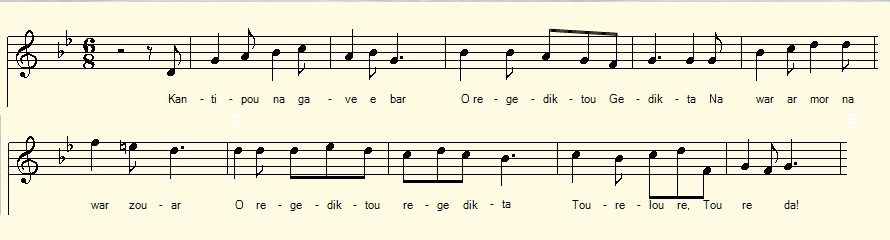
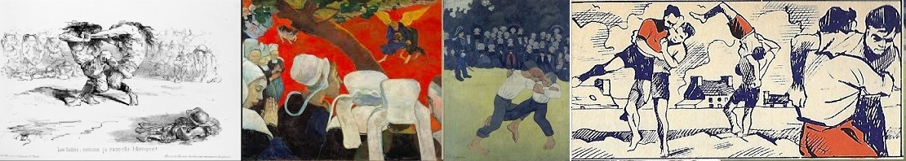

Kantipou ar gourener
Cantipou le lutteur
Cantipou the Wrestler
Chant collecté par Théodore Hersart de La Villemarqué
dans le 2ème Carnet de Keransquer (pp. 149 - 154) .

Mélodie de Pontcallec
|
A propos de la mélodie: La mention qui est faite à la strophe 51 du Marquis de Pontcallec non seulement permet de dater ce chant de l'époque de la Régence (Pontcallec fut exécuté le 26 mars 1720), mais suggère que la mélodie de la fameuse complainte pourrait accompagner ce présent chant, lui aussi composé de distiques de 8 pieds. Cette hypothèse n'est pas contredite par le refrain qui suit la strophe 35, lequel peut faire office de phrase intercalaire, comme le "treitour, ah mallozh-dit-ta!" du modèle qui présente la même syllabe finale et pourrait bien avoir été inventé par La Villemarqué pour remplacer le trivial "O réguédictou-ta, Tourélouré, louré-da". A propos du texte Certaines strophes sont numérotées dans le manuscrit, généralement entre parenthèses, de (2) à (18), sans doute afin de rétablir un ordre plus logique que celui dans lequel elles ont été chantées. Nous avons donné aux autres des numéros complétant les vides, d'abord de 1 à 1f, puis 6a à 6d, 8a à 8e, 9a et 9b, 10a à 10e, 13 a et 13b, 15 à 17a, enfin de 19 à 52, fin du chant. La numérotation originale comprend trois redites, signalées par les ajouts [bis] et [ter]: 6bis, 6ter, 7bis et 8bis. Le manuscrit comporte au total 1 refrain (onomatopées) et 80 distiques de 8 pieds, dont plusieurs semblent être des ébauches élaborées en vue d'une publication. Bien que le récit soit assez confus, on y distingue quelques épisodes: le roi des lutteurs, la charrette, le maure, le trèfle à quatre feuilles, la mort de Cantipou, Cantipou et Pontcallec. Si l'on suppose que ces pages du carnet ont été rédigées en 1841, la remarque en diagonale qui le précède, page 149/80, indique que l'informateur de La Villemarqué a appris ce chant en 1824 d'une femme de Riec-sur-Belon qui, elle-même, l'avait entendu pour la première fois en 1750, soit une trentaine d'années après les événements, puisque le marquis de Pontcallec dont il est question dans les dernières strophes mourut en 1720. |
About the tune The mention of Marquis de Pontcallec in stanza 51 not only makes it possible to date this ballad back to the time of the Régence (Pontcallec was beheaded on March 26, 1720), but suggests that the melody of The Death of Pontcallec could accompany this song, also made up of eight-foot distiches. This assumption is not contradicted by the refrain following stanza 35. It can be used as a burden in the same way as the phrase "treitour, ah mallozh-dit-ta!" in the model, with the same final syllable. This burden might have been devised by La Villemarqué to replace the undecorous "O regediktou-ta, toureloure, loure-da". About the lyrics Certain stanzas are numbered in the manuscript, generally in parentheses, (2) to (18), no doubt with a view to putting them in a more logical order than in the text recorded. We gave the other stanzas numbers filling the gaps, first from 1 to 1f, then from 6a to 6d, 8a to 8e, 9a and 9b, 10a to 10e, 13 a and 13b, 15 to 17a, finally from 19 to 52 , the last stanza. The original numbering has three redundancies, hinted at by the extensions [bis] and [ter]: 6bis, 6ter, 7bis and 8bis. The manuscript includes a total of 1 refrain (onomatopoeias) and 80 eight-foot distiches, several of them being apparently drafts intended for publication. The story, albeit quite messy, is made up of a few distinct episodes: The King of Wrestlers; The Iron Wheel Cart; The Moor; The Four-leaf Clover; The Death of Cantipou; Cantipou and Pontcallec. When assuming that this part of the notebook was recorded in 1841, we may infer from a remark written across the top margin of page 149/80, that La Villemarqué's informant learned it in 1824 from a Riec-sur-Belon woman who herself heard it for the first time in 1750, some thirty years after the events, since Marquis de Pontcallec, mentioned in the last verses, died in 1720. |
 (cliquer sur + )
(cliquer sur + ) |
BREZHONEK Ar Saoz hag ar Breton p. 149 / 80 (=79) (En diagonale, en haut à gauche, à l'encre:) "Chanté il y a 17 ans par une femme de Riec [sur Belon?] morte à 84 ans, qui en avait 10 quand il lui fut chanté. " (En haut à droite, au crayon:) "Roue ar Gourenerien Kernev. Probablement contre un lutteur de Cornwall." [1] I. ROUE AR GOURENERIEN KERNEV 1. Selao[uit] holl, [O selaouit Regediktou - Gedik, ta! Ur zon nevez a zo] savet. O Regediktou, regedik, ta! Toureloure, Toure ta! 1a. Savet da Julian Koantipou Oa mestr war an holl gourenoù. [2] . 1b. Paotr Kernev (Kantipou) na gave e bar [3] Na war ar mor na war-zouar : (Dans la colonne de droite) 1c. Nag e Bro-Zaoz nag er vro-mañ Ne gave nikun eveltañ. 1d. Paz'ae Kantipou (Paotr Kernev) war ar prad Youc'hale (a c'houlenne) 'r gourenerien vat. (x) (Dans la colonne de droite) (x) 1e. Kantipou a oa ur paotr mat Hag en-deve[ze] kalonad. (En marge à gauche verticalement.) 1f. Nag e [Kemper], nag e Korle Meur a gein 'lakaas da strakal! (6) Ar c'haboned, ar manegoù, Ar c'hole hag ar zei(z)ennoù, Hag an nompr (niver) bras a rubanoù. (7) Holl (Rac'h) a oa aet gant Kantipou: Ar c'hole hag ar zei(z)ennoù. [4] (dans la colonne de droite) (2) - Me ne daolin ket ma dilhad, Mar ne vez ket amañ ar paotr mat. - (4) Ken tev ar blev war e zivhar Evel eo ar geot war an douar..[5] (3) Mar a zo mab barzh ar ger-mañ, 'Lakay ma c'hein war an dachenn! (5) (Seizh Saoz a bil gant taol biz-troad) Eñ bil seizh Saoz gant taol biz-troad Ha kement Gall gant ur fasad. 5a. Betek an o(zh)ac'h a oa en ti A yeas a gomandiñ neuze: (6 [bis]) (En marge à droite verticalement) (6 [bis]) - Meur skeudenn-heol en-devez bet Digant an duk ha baroned Digant ar roue ha rouanez. - . p. 150 (En marge supérieure:) 6b. Ken a lare roue Bro-Saoz: [6] - Hemañ zo en tu gant Paol-gozh! 6c. - Me ne lam ket mui ma jupenn (Deoc'h) da lakaat deoc'h war an dachenn. - (Entre parenthèses) 6d. Rak e mar a grogad vat Kantipou zo ar paotr koupabl. - ********* II. AR C'HARR HOUARNET - Darn gentañ (6 [ter]) Ur c'harr houarnet 'doa eñ kemeret (en-deus gwelet) Barzh beg (d'eus benn) ur we(ze)nn 'doa hen lakaet. (7 [bis]) Pevarzek den a oa bet eno O klask tennañ ar c'har d'an traoñ; (8) Ha Kantipou buan barzh ar we(ze)nn A gign da gas (Ha gign he c'has) gantañ war e gein: (9) - 'M-eus hen douget, m'hen (hag) diskenno, Beza drouk gant nep a garo! - 9a. Ur gazeg wenn a oa staget N' hallent ket i [avat n'hallent ket:] E-bar mitizhien diskennet oant bet. 9b. Ne oa ket 'ne(zh)e evit ober Koantipou mont degas d'ar ger (10) Lakaet e viz e toull ar c'hleur En-deus kaset ar c'harr d'al leur 10a. Holl (rac'h) ar baotred oa souezhet Biskoazh kemend-all n'oant gwelet. ********* (En marge à droite) III. AR MORIAN (8bis) Ken a dostaas ur Morian Ha ne oa nikun eveltañ. 8a. Paotr Kernev hen 'n-deus kroget ; War e gein en-deus hen lakaet. 8b. War e gein en-deus eñ lakaet 'maes al lis en-deus hen stlapet. (Au crayon) 8c. Ken a grias holl a bouez-penn: - Ul lamm eo! - ul lamm eo! laouen! [7] 8d. Hag e vamm evel pa glevas E-barzh al lis hi a lammas, 8e. Etre ziouvrec'h eñ he zavas Ken sklaer e zaoulagad evel sklas. ********* p. 151 II. AR C'HARR HOUARNET - Eilved darn 10b. Met pa oa digou(ez)et mestr an ti Hennezh en-defe melkoni, 10c. 'Welet e garr a oa krouget, Bout er-fin gantañ ma vo graet! 10d. Ha Kantipou 'zavas bremañ Hag a eas da gerc'het hen de(zh)añ 10e. Voa rentet e garr d(ezh)añ er porzh Koantipou rae ket pikol-forzh. (11) - N'eo ket pare ganin-me Me hen gargo d'eoc'h c'hoazh (leun) a vein, (12) C'hwi stago d'outañ (al) ho loened Pa rin he charre, na rint ket. - (13) (Daou ejen vras a oa staget) An daou ejenn hag ar c'hezeg Fichal ar c'harr ne hallent ket; 13a. (16?) Mestr al lis a lare neuze: - Hennezh kreñvañ paotr zo er bet-mañ. - p. 152 13b. - Peus ket 'met pare gant homañ An hini krisañ ma emaez a-benn. - (14) War gorf-e-roched i oa aet, Ar c'harr d'ar park 'n en-deus kaset. 15. Hag a lare mestr an ti: - Hemañ zo gward evidomp-ni, 16. 'Gredan ket ve' nikun er vro-mañ Hag a zeufe a-benn outañ. 17. Ar c'harr ar paotr en-deus charreet Pouez teir barrikenn oa barzh, me gred 17a. Hen a ren e nerzh e-unan Ha ne lakae ket pikol van! (18) Ar re oa eno oant souezhet Doc'h Kantipou oant o sellet, 19. E wellt tost d'al lein Kantipou 'Tispakañ e loenedigoù (eno), e c'hwiligoù 20. War ar regenn i a gerzhe Ez aent 'n eil da gaout egile ('nezhe) (Marge du bas) 21. Hennezh vije bet souezhet O welet al loenedigoù 22. En-dro dezhañ o vont en-dro. (En-dro dezhañ o vont en-dro) Bep a velchon en o c'henoù. ********* (En marge à gauche verticalement) IV. AR MELCHON PEDER-DELIENN - Darn gentañ 23. Gante un dimezellig gwenn Ganti melchon peder delienn Melchon ganti leizh he barlenn. (En marge à droite verticalement) 24. Gante un dimezellig gwenn Melchon ganti leizh he barlenn. Melchon ganti peder delienn 25. Ganti el liz chatal vije bet. Neb a vije bet o sellet 26. Melchon ganti peder delienn, Hennezh a vije bet souezhet 27. Gweller, tro mare rouejoù, O tont war e c'hiz Kantipou, 28. O tont d'al liz. Pa'z hi welas Anezhañ e tegouezhas. 29. Ganti melchon peder delienn Peder delienn leizh he barlenn 30. Tri ha tri hag en o c'hreiz Ar plac'hig gwenn, gwisket e gwenn (Suite en marge p. 153) (Entre parenthèses:) 31. (O welet he c'hwilligoù Bep a velchon en o c'henoù 32. En o c'henou pep a velchon Pep a velchon peder delienn). p. 153 / II. AR C'HARR HOUARNET - Trede darn 33. Neuze al lec'h a oa gwelet Petra eno a oa (kavet) degouet 34. Ret oa skrivañ al lizherioù Da gan dezhañ e tro ar vrou 35. Peogwir oa ar vrud Kantipou Balamour vo son da Gantipou Diskan. O regediktou-ta, Toureloure, loure-da ======= V. MARV KANTIPOU 36. Etre tudjentiled ha beleien Ne gomande ket den (d'en) a-grenn 37. (Nikun an(ezh)e ne gomande) Ken na re forzh gant ar roue 38. Eñ oa en-tu gant ar Vretoned Balamour d'eus eno a oa deuet. 39. Bet a oa bet ' klask e grougañ Ha kavet nikun evitañ 40. Ar krouger a zo bet trec'het (War ar fin unan oa tapet): Gour Kantipou a vo krouget. [8] 41. - Me a gouzañvo e grougo, Kent e vin torret gant ar rod. - 42. Eñ oe an tu gant ar gumun, Ha n'en (de)fe kollet e jupenn . 43. Triwec'h an(ezh)e oa bet outañ A oant deuet a-benn d'hen krougañ ======= (En marge à droite horizontalement) IV. AR MELCHON PEDER-DELIENN - Eilvet darn 44. Ur c'hroadur bihan oa gwelet (kavet) Hogen war ar prad mailhuret 45. Ha gantañ en he dornig gwenn, Peder melchon peder delienn. 46. Ret a vo skrivañ lizherioù Da gas, avat, dre ar vroioù, 47. Evit ma vo soñj da Gantipou, A zo mestr war an holl gourenoù. (En marge à droite verticalement) 48. Gant pep unan ur bleuñv melchon Gant peb unan peb a velchon, Peb a velchon peder delienn. 49. Gante pep a velchonig gwenn Pep a velchon peder delienn. p. 154 / 89 VI. KANTIPOU HA PONTKALLEK 50. Pardon Itron Varia Porzhoù Eno oa gwelet Kantipou. 51. Kantipou ennañ voa gwelet, A-du gant Markiz Pontkallek. [9] 52. D'eus gourenerien ar Gregoù, Ne oa nikun 'vit Kantipou! [10] KLT gant Christian Souchon |
TRADUCTION FRANCAISE L'Anglais et le Breton p. 149 / 80 (=79) (En diagonale,en haut à gauche, à l'encre:) "Chanté il y a 17 ans par une femme de Riec [-sur-Belon?] morte à 84 ans, qui en avait 10 quand il lui fut chanté." (En haut à droite, au crayon:) "Roue ar Gourenerien Kernev. Probablement contre un lutteur de Cornwall". [1] I. LE ROI DES LUTTEURS DE CORNOUAILLE 1. Ecoutez tous! Tous, écoutez Regediktou - Gedik, ta! Ce chant qu'on vient de composer! O Regediktou, regedik, ta! Toureloure, Toure ta! 1a. Le sujet: Julien Cantipou Le meilleur lutteur entre tous, [2] . 1b. Cornouaillais, n'ayant d'adversaire [3] De son rang sur mer ni sur terre: (Dans la colonne de droite) 1c. Chez nous ou bien chez les Saxons, Nul n'a pu vaincre ce garçon. 1d. Dès qu'il pénétrait sur le pré, Les meilleurs lutteurs l'acclamaient. (x) (Dans la colonne de droite) (x) 1e. C'était un garçon généreux, Tout en étant fort courageux. (En marge à gauche verticalement.) 6a. Combien, de [Quimper] à Corlay, D'échines a-t-il fait claquer! (6) Les chapons, les gants [parfumés], Le taurillon enrubanné Et les flots de rubans [dorés], (7) Tout revenait à Cantipou: Taurillon et rubans et tout! [4] (Dans la colonne de droite) (2) - Je n'ôterai mes vêtements Que contre lui, [lui seulement!] (4) Lui dont les jambes sont couvertes De poils drus comme l'herbe [verte]. [5] (3) Capable d'un seul coup, d'un seul De plaquer mon dos sur le sol! (5) (Sept Anglais d'un seul coup de pied!) Il abat, du pied, sept Anglais; D'une giffle, autant de Français! 5a. Alors le maître de maison Est venu dire à ce garçon: (En marge à droite verticalement) (6 [bis]) L'ombre portée est bien plus grande Venant des ducs que des barons, Des rois que des reines, dit-on. . p. 150 (En marge supérieure:) 6b. Chez les Anglais, le roi [champion], [6] Le disait suppôt du démon! 6c. Que j'ôte ma veste? Non pas! Chez vous autres plus de combat! (Entre parenthèses) 6d. (En cas de douteuse empoignade, Cantipou, c'est lui le coupable!) ********* II. LA CHARRETTE - Première partie (6 [ter]) Une charrette aux roues ferrées Qu'en haut d'un arbre il a hissée (vue). (7) Quatorze hommes n'arrivent pas A la tirer de haut en bas; (8) Cantipou grimpe donc là-haut Et veut la prendre sur son dos: (9) - Je l'ai prise et la descendrai Et tant pis si cela déplait! - 9a. Une jument blanche, en vain, fut Attelée. Garçon, serais-tu Au rang de femme descendu? 9c. En désespoir de cause on va Chercher Cantipou. Le voilà! (10) Dans le trou du timon il mit Son doigt et la redescendit 10a. Tout le monde était ébahi Tant cet exploit était inouï. ********* (En marge à droite) III. LE MAURE (8bis) Et un maure alors s'approcha, Un [géant] comme on n'en voit pas. 8a. Le Cornouaillais l'a saisi ; Et vlan! sur le dos il l'a mis 8b. Sur le dos il l'avait couché. Hors de la lice il l'a lancé. (Au crayon) 8c. Et les gens criaient à tue-tête: - C'est un "lamm"! Un "lamm"! C'est la fête! [7] 8d. Et sa mère en voyant cela Dedans la lice s'élança, 8e. Il la souleva dans ses bras Avec, dans les yeux, quel éclat! ********* p. 151 II. LA CHARRETTE - Deuxième partie 10b. Voilà qu'arrive le patron. Lequel se languit, dirait-on, 10c. De voir sa charrette pendue. Il veut qu'elle lui soit rendue, 10d. Alors Cantipou s'est levé Et il est allé la chercher. 10e. Elle est revenue dans sa cour Cantipou l'a fait sans effort. (11) - Ma prestation doit être entière: Je m'en vais la remplir de pierres, (12) Amenez de quoi la tirer, Pour que le tableau soit complet. (13) Deux boeufs sont attelés, deux beaux Grands boeufs qu'on ajoute aux chevaux: Il ne bouge pas, le chariot; 13a. Le maître des lieux dit alors: - Nul homme au monde n'est plus fort! - p. 152 13b. Je n'ai pas eu satisfaction: D'être le plus strict j'ai raison! - (14) Ils tirent, en corps de chemise, La charrette où l'on l'avait prise. 15. Le maître des lieux dit bien haut: - C'est le protecteur qu'il nous faut. 16. Je crois que nul en ce pays Ne peut se mesurer à lui. 17. Le char qu'il a tiré sans peine, Pesait bien trois barriques pleines, 17a. A la seule force des bras Sans beaucoup d'efforts, de surcroît! (18) Le public était éberlué, Avait sur lui les yeux rivés: 19. Près de la lice, Kantipou A dételé les animaux 20. Et en file indienne ils marchaient L'un tout contre l'autre pressé, (Marge du bas) 21. De quoi vraiment devenir fou, Quand vous voyez des animaux 22. Ainsi tourner autour de vous. Et les voir tourner [gentiment] Chacun du trèfle entre les dents. ********* (En marge à gauche verticalement) IV. LE TREFLE A QUATRE FEUILLES - 1ère Partie 23. Et une blonde demoiselle Avec, tout plein son escarcelle, Du trèfle à quatre feuilles, Oui. (En marge à droite verticalement) 24. Et une blonde demoiselle, Du trèfle plein son escarcelle A quatre feuilles [toutes belles,] 25. Sur la lice avec les bestiaux Qui la regardaient. Quel tableau! 26. A quatre feuilles, oui, ma foi, De quoi provoquer tant d'émoi! 27. Au moment de choisir les "rois" Cantipou revint sur ses pas 28. Vers la lice. Elle l'avisa Et s'approcha de quelques pas. 29. A quatre feuilles toutes belles, Les trèfles dans son escarcellle. 30. Trois par trois, avec en leurs rangs Cette blonde vêtue de blanc (Suite en marge p. 153) (Entre parenthèses:) 31. (On vit les animaux marchant Avec du trèfle entre les dents, 32. Chacun son trèfle à quatre feuilles, [Qu'il mâchonnait avec orgueil]) p. 153 / II. LA CHARRETTE - Troisième partie 33. Et l'on réalise après coup Ce qui s'est passé. Avant tout, 34. Il fallait écrire des lettres, Permettant à tous de connaître 35. Et de répandre un peu partout La chanson du grand Cantipou. Refrain: O regediktou, O egedikta, Toureloure, loure Toureloure-da ======= V. LA MORT DE CANTIPOU 36. Les prêtres et les gentilshommes Ne commandaient plus à personne. 37. Non, personne ne commandait. Et du Régent tous se moquaient, 38. Son parti c'était les Bretons, Etant l'un de leurs rejetons. 39. On décida donc de le pendre, Mais sans bourreau comment s'y prendre? 40. Le bourreau, il le dominait (Mais on finit par en trouver) Ce Cantipou on le pendrait! [8] 41. - Il faut, avant que de me pendre, Sur la roue qu'on brise mes membres. - 42. Le peuple était de son côté. Nul n'aurait oté son gilet. 43. Et pour le pendre ils se sont mis Et avec grand' peine à dix-huit. ======= (En marge à droite horizontalement) IV. LE TREFLE A QUATRE FEUILLES - 2ème Partie 44. Et l'on vit un petit enfant Emmailloté dans le grand champ 45. De sa blanche menotte il cueille Quatre trèfles à quatre feuilles. 46. Il faut qu'on écrive des lettres Pour partout les faire paraître, 47. En souvenir de Cantipou, Le champion de lutte entre tous (En marge à droite verticalement) 48. A chacun une fleur de trèfle A chacun du trèfle: il doit être, A quatre feuilles [c'est bien mieux.] 49. Ils portaient tous du trèfle blanc A quatre feuilles, [oui vraiment]. p. 154 / 83 VI. CANTIPOU ET PONTCALLEC 50. Et au pardon de Notre-Dame Des Portes l'on vit Cantipou. 51. Avec Monsieur de Pontcallec: [9] L'un et l'autre, ils faisaient un tout. 52. Parmi les anciens lutteurs grecs Aucun n'égalait Cantipou! [10] Traduction C. Souchon (c) 2020 |
ENGLISH TRANSLATION The Englishman and the Breton [1] p. 149 / 80 (=79) (Left top margin, diagonally, ink ) (French:) "Sung 17 years ago by a Riec [-sur-Belon?] woman who died at 84. She was 10 when this was sung to her." (Right top margin, pencil:) (Breton:) "The King of Cornouaille wrestlers (French:) Probably against a Cornwall wrestler ". [1] I. THE KING OF CORNOUAILLE WRESTLERS 1. O Listen all to my ditty! Regediktou - redik, ta! It was composed but recently O Regediktou, regedik, ta! Toureloure, Toure, ta! 1a. On Julian Cantipou, a wrestler Who was the best wrestler ever, [2] 1b. A Cornouaille man who could withstand [3] Any lad on sea or on land: (In the right column) 1c. In England or in Brittany, No one could beat him most surely. 1d. As soon as he entered the lists... Say "hurrah!": you have got the gist! (x) (In the right column) (x) 1st. For he was a jolly young brat, And a very brave one at that. (In the left margin vertically.) 6a. How many backs, in Corlay town Has he brought down to the ground! (6) Fine woven gloves and plump capons, A young bull adorned with ribbons, A huge lot of decorations, (7) All trophies went to Cantipou: The young bull with the ribbons too! [4] (In the right column) (2) - If I am to take off my clothes, Wrestling with him is what I choose. (4) Him whose legs are covered with hairs As thick as the hide of the bears. [5] (3) Able at the very first grasp To lay my back down to the grass! (5) Seven Englishmen with a kick He knocks down, aye, that is his trick; As many Frenchmen with a clip! 5a. Now the owner of the estate Wants with the wrestler to debate: (Right margin vertically) (6 [bis]) - The drop shadow is larger from A duke than from a low baron, And from a "king" than from a queen... - . p. 150 (In the upper margin :) 6b. So that the "king" of England said, - This lad by the devil was made! [6] 6c. I shan't take off my jacket that Might be spoiled on the wrestling mat!. (In brackets) 6d. (In case of a dubious grip, Rely on it: he's the culprit!) ********* II. THE IRON WHEEL CART - 1st Part (6 [ter]) Once he hoisted an iron wheeled Cart up to the top of a tree. (7) Fourteen men pulling on a rope, To take it down...They lost all hope; (8) Cantipou, being under attack, Tried to take the cart on his back: (9) - I took it up; I'll take it down! Too bad if it displeases some! - 9a. A white mare they hitched up to start With, but could not pull down the cart. Frail maids would have been just as smart! ... 9b. The willful cart did not relent... Cantipou had to lend a hand. (10) Into the drawbar hole he stuck His finger: down came the whole truck! 10a. And everyone was amazed By this feat! Everyone gazed! ********* (Right margin) III THE MOOR (8bis) A Moor had patted his shoulder, The hugest that was seen ever. 8a. The Cornouaille lad seized the Moor And he flung his back to the floor! 8b. The Moor laid with both shoulders down. Then out of bounds he was thrown. (In pencil) 8c. The people yelled loudly:- Well done! A "lamm", if there ever was one! - [7] 8d. And his mother, as she saw it, Into the bounds quick she hurried, 8th. He lifted her up in his arms And his eyes sparkled like twin charms! ********* p. 151 II THE IRON WHEEL CART - 2nd Part 10b. The landlord came back, was about. To have a fit of rage, no doubt, 10c. For he had seen his cart hanging: - Put an end to this stupid thing! - 10d. On hearing it, Cantipou starts To his feet and runs for the cart. 10e. Soon the cart was back in the yard: Cantipou did it. 'Twas not hard. (11) - About it I will make no bones: I'm going to fill it with stones, (12) Bring draught animals to trail it, Without a team it's not complete. - (13) Two big oxen to the horses, Are added to increase forces: The cart does not move nonetheless; 13a. The lord said:- Ask whomsoever: No man in the world is stronger! - p. 152 13b. - I don't think your task is finished. I am right if I'm very strict! - (14) So that they drew back, in their shirts: The cart to where it stood at first. 15. The landlord exclaimed: - Indeed: He's the protector whom we need! 16. I think no one in this country Could measure up to him, surely! 17. The chariot he pulled without toil, Weighed, I take it, three barrelfuls, 17a. He just used the strength of his arms And without doing himself harm! (18) People for a long time were quiet, Could not take their eyes off the sight: 19. Not far from the lists, Kantipou Unhitched oxen and horses too. 20. There in a single file they walked Round as if by some magic blocked. (Bottom margin) 21. Who had not wondered at the sight Of these beasts in that sorry plight, 22. Spinning like a merry-go-round, Like a merry-go-round spinning And each of them clover munching? ********* (Left margin vertically) IV THE FOUR LEAF CLOVER - 1st Part 23. A fair young lassie furthermore With four leaf clover that she wore In her apron full to the brim. (Right margin vertically) 24. There was a fair lass furthermore With four-leaf clover that she wore In her apron full to the brim. 25. The hungry cattle did trespass On the lists, were fond of the grass 26. Devised to honour the new "king"... What a show! How exciting! 27. Time to proclaim the "kings" had come, Time for Cantipou to return. 28. Towards the lists he came over. The lass took a few steps closer. 29. With her apron full of four leaved, Clover with which it overbrimmed. 30. Three by three they stalked. In the mess The blonde lassie with the white dress. (Continued in the margins p. 153) (In brackets :) 31. (They saw these beasts, a spinning wreath, Munching clover between their teeth, 32. Each of them munched four-leaf clover, [Four leaf clover tastes better!] p. 153 / II THE IRON WHEEL CART - 3rd Part 33. And they realized, all of them, That a true wonder had happened, 34. For writing letters there were grounds To all notables here around. 35. Spreading a song on Cantipou Is the best thing we have to do. Burden: O regediktou, regedikta, Toureloure, loureda ======= V. DEATH OF CANTIPOU 36. The rule of gentry and clergy Did not count for anybody 37. To obey no one was willing, And no one did care for the King 38. He was a friend to the Bretons Since he was one of their scions. 39. They decided, he would be hung, Well, but what about the hangman? 40. The hangman was beaten by him. (But they managed the thing to trim): The man Cantipou will feel grim! [8] 41. - I'll suffer to be hung with zeal Once you have put me on the wheel.- 42. The low people were on his side:. He kept his jacket on his hide. 43. And there were no less than eighteen Men needed, the day they hanged him ======= (In the margin on the right horizontally) IV THE FOUR LEAF CLOVER - 2nd Part 44. And then a little child was seen In swaddling bands upon the green 45. With its tiny hands, all over The field, he plucked four-leaf clover. 46. ??We have got to write letters and To send them all over the land, 47. For advertising Cantipou, The wrestler: a thing we should do (Right margin vertically) 48. To each one a clover flower To each of them, some fine clover Four-leaf clover [is much better.] 49. To each a bunch of white clover But, of course, of four-leaf clover. p. 154/83 VI. CANTIPOU AND PONTCALLEC 50. At the "Pardon" of Our-Lady Of the Gates" they saw recently. 51. Cantipou and Lord Pontcallec: [9] They are two cards in the same deck. 52. Which Greek wrestler of old do you Think could compare with Cantipou? [10] Translation C. Souchon (c) 2020 |
NOTES
|
[1] Contre un lutteur de Cornwall Le chant qui commence à la page 149 est précédé d'une succession de titres qui témoigne de l'intérêt que lui porte le collecteur. Il semble considérer que le sujet principal est la rivalité entre deux lutteurs, l'un de Cornouaille bretonne (Kernev), l'autre de Cornouailles anglaise (Kernev-Veur). En réalité, seules 3 strophes (6b à 6d) notées en marge de la p.150, et que l'on peut, de ce fait, supposer ajoutées après coup, semblent se rapporter à un champion anglais ("roue Bro-Saoz") peu enclin à affronter l' adversaire breton. Il est vrai qu'une strophe du texte principal, P.149, str. 5, affirme que ce dernier "abat 7 Anglais d'un coup d'orteils / et autant de Français d'une claque." Ce chant monumental (80 strophes) comporte 6 récits entremêlés sur le carnet d'enquête et prolongés par des variations et enjolivures qui sont probablement le fait du collecteur. [2] La lutte bretonne La thèse de doctorat consultable en ligne, défendue en mai 2008 par Melle Aurélie Epron devant l'Université Européenne de Bretagne Rennes 2 (EDHSH - Anthropologie et sociologie) parle d' "une lutte traditionnelle héritée des Celtes dès les premiers siècles de notre ère, des combats qui se déroulent uniquement debout pas de jeu au sol, dès la chute les lutteurs se relèvent , les mains peuvent uniquement saisir la roched ou chemise, les jambes attaquer les jambes, un vocabulaire technique et darbitrage en breton..." (T.I p.10). La filiation avec les Bretons insulaires que La Villemarqué semble postuler "est généralement admise et prolongée du fait que, sur dautres terres celtiques, des luttes qui se jouent debout et habillées ont existé ou se pratiquent toujours." C'est la cas en particulier pour la lutte cornique "cornish wrestling" ou "wrasslin", la plus proche du "gouren" breton (costume similaire: "jacket" ou chemise, lutte pieds-nus). Si des traditions de lutte similaires au "gouren" existent en Suisse, en Espagne, en Islande..., c'est surtout avec leurs voisins d'Outre-Manche que les lutteurs bretons ont des interactions attestées par des documents anciens (rencontre à Châteaubriant en 1551...) La présent pièce est un témoignage précieux sur le regard porté sur cette pratique, avant que le
[3] Cantipou Ce lutteur cornouaillais portait un nom d'origine normande. Louis de Viennens, échevin d'Harfleur, envoyé de cette ville auprès du roi (1455 - 1510) était seigneur de Sénitot et de Cantipou, un quartier de Gonfreville-L'Orcher. Ce titre était porté par sa femme, Marie, descendante de Thomas d'Ercambourg (né en 1325), seigneur de Gainneville, Sénitot, Cantipou (Harfleur). [4] Chapons, taureau, gants et rubans A cette liste de trophées il faut ajouter les "aiguillettes", à l'origine des cordons à bouts ferrés servant à attacher les chausses au pourpoint, puis des éléments décoratifs. "A Châteauneuf-du-Faou de 1616 à 1627, les dépenses de la fabrique (organisme administrant une paroisse) mentionnent des aiguillettes et des gants pour faire jouer et lutter les jeunes gens, des rubans et épingles pour les jeunes filles (...pour dautres jeux)... Les archives paroissiales de Plogonnec indiquent que de 1624 à 1668, des aiguillettes étaient distribuées aux jeunes gens victorieux des luttes, le jour du pardon organisé à loccasion de lAscension. De 1634 à 1644, 38 sols étaient dépensés pour des aiguillettes et des gants comme prix pour les « jeunes gens ». (cité par Melle Epron). En revanche, il n'est nulle part question des trèfles à quatre feuille distribués (ou vendus?) par une main innocente... [5] Les jambes velues du lutteur Il semble qu'inconsciemment le narrateur assimile ce lutteur à la force surhumaine à une créature mythologique (faune ou Pan) ou encore à l'"homme sauvage" des contes dont le Merlin breton est le prototype. [6] Le roi des Anglais Le mot "roue" (roi) aux strophes 6b et 27 (mais non à la strophe 37 où il désigne le Régent) signifie à l'évidence "champion". Le sens à donner à ce mot au couplet 6bis est moins certain. Il signifie "champion" si l'on comprend que le propriétaire des lieux conseille à Cantipou d'affronter des adversaires détenteurs des titres pugilistiques les plus élevés possible. Dans ce cas "duc" et "baron" seraient aussi des titres - et "rouanez" (reine) une boutade -. Il se peut aussi que, vu ses talents exceptionnels, il lui recommande de se faire connaître des puissants de ce monde, auquel cas tous ces titres sont à prendre au sens propre. [7] Un "lamm" Un terme technique (str. 8c) qui signifie ordinairement "saut" et désigne la "projection de l'adversaire à terre avec contact au sol des deux omoplates avant toute autre partie du corps". C'est le résultat parfait qui donne une victoire immédiate. Quelques autres termes propres à la lutte sont évoqués dans le chant: "Roched", la veste blanche de combat (strophe 14), le "croc-en-jambe", appelé "kliked" (ici "taol biz-troad"), mais la "fasad", la giffle, est de nos jours strictement prohibée (str. 5); "kein" (dos) est un avantage comptabilisé dans le décompte des points (str. 1f, 8, 8a, 8b). La strophe 6d, "e mar a grogad vat", "en cas de doute (mar) sur la validité (mat) d'une prise (krokad)" nous plonge au cur du sujet. Le "gouren" moderne a conservé d'autres termes bretons: "netra" ("rien": chute sans résultat); "kostin" ("côté": une seule omoplate au sol); "diwall" (avertissement), "fazi" (faute), "poent" (point), "fazi vras" (disqualification); "divrud" (faute grave). Ces informations sont tirées de Wikipédia. [8] "Gour Kantipou" L'examen attentif de la page 153 montre que le troisième vers de la strophe 40 doit se lire "Gour Kantipou a oa kroughet", "l'homme Cantipou a été pendu" ("gour" et non "gant", comme indiqué dans la transcription du CRBC et qui voudrait dire "il fut pendu par Cantipou"). Peut-être cette formulation inhabituelle est -elle motivée par l'étymologie traditionelle du mot "gouren", "lutte et "lutter". La lutte était pourtant très appréciée des dames, en tant que spectatrices, comme le montrent les deux tableaux des peintres de Pont-Aven reproduits ci-dessous, Gauguin et Sérusier. La mère de Cantipou assiste au combat qui l'oppose au Maure. Elle ne peut s'empêcher de pénêtrer dans la lice, ce qui, bien entendu, était normalement interdit (str. 8d-8e)! Les nobles ne dédaignaient pas de se mesurer à la lutte avec les roturiers . [9] Cantipou et Pontcallec Outre cet aspect mythique ce chant a une tonalité politique marquée. Les strophes 50 à 52 nous apprennent que Cantipou et le marquis de Pontcallec se fréquentent. Ce dernier avait pris la tête d'une conspiration contre le Régent Philippe d'Orléans et fut décapité en 1720 (ce qui permet de dater ce chant). L'épisode de la rencontre des deux hommes au Pardon de Notre-Dame des Portes de Châteauneuf-de-Faou précède logiquement, celui de la pendaison de Cantipou, victime de la répression visant tous les membres supposés de la conspiration. La décapitation étant réservée aux nobles, Cantipou subit le supplice réservé aux roturiers, précédé, pour conjurer sa force surhumaine de celui de la roue. Par ailleurs, il apparaît que La Villemarqué, en reportant sur le marquis ce qui est dit ici de Cantipou, a adapté les strophes 36 à 39, pour en faire les premiers couplets de l'"Elégie de Pontcallec" du Barzhaz de 1845. [10] Kan Gourenerien Breizh A ces diverses références, il convient d'ajouter la suivante, tout empreinte de fierté bretonne. C'est une composition d'Yves Bertou parue en 1912 dans le N° 207 du "Kloc'hdi Breiz" (Clocher breton), p. 2478. Ce "Chant de marche des lutteurs de Bretagne", reférencé M-10604 dans le catalogue Malrieu, se chante sur l'air gallois de l'hymne "Bro gozh ma zadoù":
"Cocorico!" se dit "Kokokog!" en breton! Ou mieux "Deus d'ar ger da gousket!" (Rentre chez toi te coucher!) |
[1] Against a Cornwall wrestler The song which begins on page 149 is preceded by several titles, which testifies to the interest the collector takes in it. He apparently considers that the main subject is the rivalry between two wrestlers, one from Breton Cornouaille (Kernev), the other from British Cornwall (Kernev-Veur). In reality, only 3 stanzas (6b to 6d) noted in the margins of p.150, which we may therefore assume were added afterwards, seem to relate to an English champion ("roue Bro-Saoz") reluctant to challenge his Breton counterpart. Maybe he is well advised to do so since a stanza of the main text, P.149, str. 5 claims that the latter "knocked down 7 Englishmen with a kick / and as many Frenchmen with a slap." This monumental song (80 stanzas) as it is appears in the collecting book includes 6 intertwined stories extended by variations and amendments which are probably imputable to the collector himself. [2] Breton wrestling The doctoral thesis available online, submitted in May 2008 by Ms. Aurélie Epron to the European University of Brittany Rennes 2 (EDHSH - Anthropology and Sociology) is about "Wrestling traditions inherited from the Celts of the first centuries of our era: fight in standing position only - no fighting in parterre position (after a fall wrestlers get up immediately); hands may only grasp the opponent's "roched" (shirt), legs attack the opponent's legs; technical vocabulary and arbitration in Breton..." (Part I, p.10). British origins that La Villemarqué seems to assume "are generally accepted and corroborated by the fact that, in other Celtic lands, wrestling is also practised in standing position and similar dress." This is particularly relevant for Cornish wrestling (or "wrasslin"), which is closest to Breton" gouren" (costume:" jacket "or shirt, barefoot wrestling). Wrestling traditions akin to "gouren" also exist in Switzerland, Spain, Iceland ...,but it is with their neighbours across the Channel that Breton wrestlers most interact, as evidenced by old documents (wrestlers' meeting in Châteaubriant in 1551 ...) The song at hand is a precious testimony to how wrestling was practised before Dr Cotonnec, first President of FALSAB
On the other hand, the last verse (str. 52) suggests a link of descent from ancient Greek-Roman wrestling to Breton "gouren" (evidently denied by Alfred Darjou, see picture below!) [3] Cantipou This Breton wrestler had a name of Norman origin. Louis de Viennens, alderman of Harfleur, deputy of this city to the King (1455 - 1510) was styled Lord of Sénitot and Cantipou, a district of Gonfreville-L'Orcher near Harfleur. He held these titles in right of his wife, Marie, a descendant of Thomas d'Ercambourg (born in 1325), lord of Gainneville, Sénitot, Cantipou (Harfleur). [4] Capons, bull, gloves and ribbons To this list of trophies, "doublet-aglets" should be added, which were at the origin cords with iron ends used to tie breeches to a doublet, then sheer decorative elements. "In Châteauneuf-du-Faou, from 1616 to 1627, the list of expenses incurred by the "fabrique" ( parish council) mentions 'aglets and gloves to be awarded to young wrestlers as well as ribbons and pins for young girls (... for other games) ... The parish archives of Plogonnec state that, from 1624 to 1668, aglets were awarded to young people victorious in wrestling matches during the "Pardon" which took place on the Ascension feast day: 38 crowns were spent on aglets and gloves as trophies for "young people" (quoted from Miss Epron's thesis). However there is nowhere mention of the four-leaf clovers distributed (or sold?) by an innocent hand ... [5] The wrestler's hairy legs It seems that the narrator unconsciously assimilates this wrestler with superhuman strength with a mythological creature (Faunus or Pan) or even with the "wylde man" in ancient tales of which the Breton Merlin is the prototype. [6] The "King" of the Britons The word "roue" (king) in stanzas 6b and 27 (but not in stanza 37 where it applies to the Regent) obviously means "champion". The meaning to be given to this word in verse 6bis is less certain. It means "champion" if we understand that the owner of the premises advises Cantipou to confront opponents with the highest possible pugilistic titles. In this case "duke" and "baron" would also be titles earned by wrestlers - and "rouanez" (queen) a joke -. Given his exceptional talents, he may also recommend that Cantipou make himself known to the powerful in this world of ours, in which case these titles should be taken literally. [7] A "lamm" A technical term (8c) which usually means "jump" and refers to the "projection of the opponent on the ground with contact of both shoulder blades before any other part of the body". It is the perfect grip resulting in an immediate victory. Some other terms specific to wrestling are encountered in the song: "Roched", the white combat jacket (str. 14); "tripping up" (Breton "kliked", here "taol biz-troad"), but the "fasad", meaning a slap, is nowadays strictly prohibited (str. 5); "kein" (back) is an advantage in the points count (str. 1f, 8, 8a, 8b). Stanza 6d, "e mar a grogad vat", "in case of doubt (mar) on the validity (mat) of a grip (krokad)" takes us to the heart of the subject matter. Modern "gouren" has kept other Breton terms: "netra" ("nothing": a fall without point value); "kostin" ("side": only one shoulder on the ground); "diwall" (warning), "fazi" (fault), "poent" (point), "fazi-vras" (disqualification); "divrud" (gross fault). This information is taken from Wikipedia. [8] "Gour Kantipou" A close examination of page 153 shows that the third line of stanza 40 should read "Gour Kantipou a oa kroughet", which translates as "The man Cantipou was hanged" ("gour" and not "gant", as stated in the CRBC transcription which would mean "he was hanged by Cantipou"). Perhaps this unusual formulation is motivated by the traditional etymology of the word" gouren ","(to) wrestle". Wrestling was nonetheless very much appreciated by ladies, as spectators, as evidenced in the pictures by two Pont-Aven painters inserted below, Gauguin and Sérusier. Cantipou's mother attends the match between her son and the Moor. She can not help entering the lists, which of course was usually forbidden (str. 8d-8e)! Aristocrats sometimes vouchsafed to measure themselves with commoners in wrestling matches. [9] Cantipou and Pontcallec. Besides this mythical aspect, this song also has a marked political tone. Stanzas 50 to 52 tell us that Cantipou and Marquis de Pontcallec were often seen together. The latter had taken the lead in a conspiracy against the Regent Philippe d'Orleans and was beheaded in 1720 (which allows us to roughly date this song). The episode of the meeting of the two men at the Pardon of Notre-Dame-des-Portes in Châteauneuf-de-Faou logically precedes that of the hanging of Cantipou, victim of repression against all alleged members of the conspiracy. Beheading being a privilege of the nobles, Cantipou undergoes the torture reserved for the commoners, hanging, preceded by that of the wheel, to ward off his superhuman strength. It appears that La Villemarqué, when transferring to the Marquis what is said here about Cantipou, adapted stanzas 36 to 39, to make of them the first verses of the "Elegy of Pontcallec" in the 1845 Barzhaz. [10] Kan Gourenerien Breizh To these various references, we cannot help adding the following, drenched with Breton jingoism. It is a composition by Yves Bertou, published in 1912 in N° 207 of "Kloc'hdi Breiz" (The Breton bell steeple), p. 2478. This "March of the Wrestlers of Brittany", referenced M-10604 in the Malrieu catalog, is sung to the Welsh tune of the hymn "Bro gozh ma zadoù":
"Cock-a-doodle Doo!" (the cry of the proud Gallic cock) is in Breton either "Kotokogog!" or "Deus d'ar ger da gousket!" (Return home and go to bed!) |

|
La lutte bretonne a inspiré divers artistes: Alfred Darjou ("Les luttes, comme ça rappelle l'antique!", 1859), Paul Gauguin ("Jacob et l'ange" ou "Vision après le sermon" ,1888 ), Paul Sérusier("La lutte bretonne",1888), Pierre Péron (Illustration pour la méthode de breton "Deskom Brezoneg", 1957). Peut-être Gauguin et Sérusier ont-ils peint le même spectacle qui eut lieu à Pont-Aven, en 1888, où l'assistance se composait presque exclusivement de femmes et d'enfants. Les lutteurs étaient des garçons d'environ 14 ans. Le tableau de Gauguin illustre l'exemple donné par le dictionnaire de 1732 du Père Grégoire à l'article 'lutte": "Jakob a c'hourenas oc'h un ael hed un nozvezh". "Jacob lutta contre l'Ange toute une nuit". On y voit le rouge pré de la lutte, l'Arbre de la connaissance (ou s'agit-il de la rivière Jaboc et de la verte Terre promise?) et une vache qui représente, selon certaines interprérations, les voies de la rédemption. Ne serait-ce pas aussi le veau des strophes 6 et 7? |
Breton wrestling inspired various artists: Alfred Darjou ("Les luttes, comme ça rappelle l'antique!", 1859), Paul Gauguin ("Jacob and the angel" or "Vision after the sermon", 1888), Paul Sérusier ("The Breton wrestlers", 1888), Pierre Péron (Illustration for the Breton manual "Deskom Brezoneg", 1957). Gauguin and Sérusier maybe painted the same show which took place in Pont-Aven, in 1888, where the audience consisted almost exclusively of women and children. The wrestlers were boys of around 14 years. Gauguin's painting illustrates the example given by Father Grégoire's dictionary (1732) under item "wrestle": "Jakob a c'hourenas oc'h un ael hed un nozvezh". "Jacob wrestled with the Angel all night long". We see the red meadow of the struggle, the Tree of knowledge (or is it the Jabbok river and the green Holy land?) and a cow which reveals, according to certain interpretations, the means of man's redemption. Could it not also be the calf in stanzas 6 and 7? |